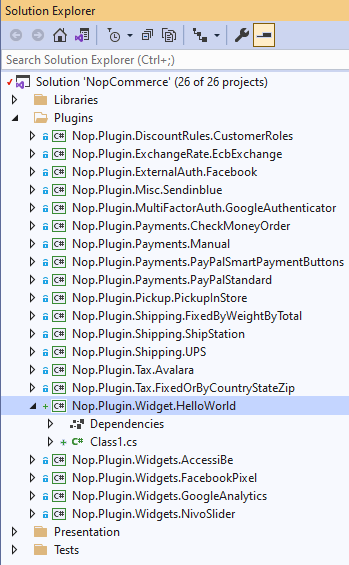

A guide to expanding the basic functionality of nopCommerce through a plugin
Overview
nopCommerce uses the plugins system to extend the functionality of the nopCommerce admin panel and uses a widget system to extend the functionality of the website. Plugins and Widgets are a set of independent programs or components that can be added to an existing system to extend some specific functionality and also can be removed from the system without affecting the main system during the process. So by using the concept of Plugins and widgets we can add more functionality to our system and we can build them without altering or editing the core source code of the nopCommerce solution. This enables us to upgrade or downgrade our nopCommerce solution to the latest version or older version as we desire without having to rewrite plugins and widgets we already created.
Difference between Plugin and Widget
As we know both plugins and widgets are for extending the functionality of the nopCommerce solution. Well, then you may ask "what is the difference between them". Ultimately in nopCommerce, you can think of widgets as a plugin but with an extra feature. To create a widget the process is mostly the same as creating a plugin, but by using widgets we can show some UI (User Interface) to nopCommerce public website in some specific areas predefined by nopCommerce which is known as widget-zones. Which we cannot achieve only via a plugin. You may think of Widget as a Superset of Plugin.
Note
All available widget zones can be found in the Nop.Web.Framework.Infrastructure namespace:
for the admin panel can be found in the AdminWidgetZones.cs file.
for the public store can be found in the PublicWidgetZones.cs file.
I think you are a bit more clear about what widgets and plugins are when they can be used and what is the benefits of using them. So, now let's go and create a simple widget that shows a "Hello World" message to the public site, to understand how to create a widget in nopCommerce.
Initialize Plugin Project
Step 1: Create a new project
Go to the nopCommerce official website and download the latest nopCommerce source code. Open your nopCommerce solution in your favorite IDE (Microsoft Visual Studio is recommended). If you want to know more about the structure of the project, then first check out the article "Source code organization". On the roof of the solution, you will see a Plugins folder, expand that folder and you will see a list of plugin projects shipped with nopCommerce by default.
In order to create new Widget project, Right-click on Plugins folder: Add -> New Project. After that add new project window will appear.
Select the Class Library project template and go to the next step, where you will need to specify the name of the project.
nopCommerce follows some standard naming conversion, which you can get more information from nopCommerce documentation. I have chosen Nop.Plugin.Widget.HelloWorld as my project name by following the naming conversion of nopCommerce. And the location should be inside the /src/Plugins directory. Now click Next.
This should create a new project inside the Plugin directory. And you may see in your solution like this:

Step 2: Configure your new project to be used as Widget
We need to configure a couple of things in our project for it to be used as a Plugin or Widget.
After you create your project successfully open its .csproj file, for that right-click on your project, and click the {Your_Project_Name.csproj} menu from the context menu and replace its content with the following code.
<Project Sdk="Microsoft.NET.Sdk">
<PropertyGroup>
<TargetFramework>net7.0</TargetFramework>
<Copyright>SOME_COPYRIGHT</Copyright>
<Company>YOUR_COMPANY</Company>
<Authors>SOME_AUTHORS</Authors>
<PackageLicenseUrl>PACKAGE_LICENSE_URL</PackageLicenseUrl>
<PackageProjectUrl>PACKAGE_PROJECT_URL</PackageProjectUrl>
<RepositoryUrl>REPOSITORY_URL</RepositoryUrl>
<RepositoryType>Git</RepositoryType>
<OutputPath>..\..\Presentation\Nop.Web\Plugins\{PLUGIN_OUTPUT_DIRECTORY}</OutputPath>
<OutDir>$(OutputPath)</OutDir>
<!--Set this parameter to true to get the dlls copied from the NuGet cache to the output of your project. You need to set this parameter to true if your plugin has a nuget package to ensure that the dlls copied from the NuGet cache to the output of your project-->
<CopyLocalLockFileAssemblies>false</CopyLocalLockFileAssemblies>
</PropertyGroup>
<ItemGroup>
<ProjectReference Include="..\..\Presentation\Nop.Web.Framework\Nop.Web.Framework.csproj" />
<ClearPluginAssemblies Include="$(MSBuildProjectDirectory)\..\..\Build\ClearPluginAssemblies.proj" />
</ItemGroup>
<!-- This target execute after "Build" target -->
<Target Name="NopTarget" AfterTargets="Build">
<!-- Delete unnecessary libraries from plugins path -->
<MSBuild Projects="@(ClearPluginAssemblies)" Properties="PluginPath=$(MSBuildProjectDirectory)\ $(OutDir)" Targets="NopClear" />
</Target>
</Project>
Here replace {Plugin_Output_Directory} with your project name, in my case Widget.HelloWorld.
What this will do is it copies all DLL files related to this project into the Nop.Web/Plugin/{Plugin_Output_Directory}, because Plugin directory inside Nop.Web is the location where nopCommerce searches from plugins and widgets to display in Plugin or Widget list in the admin panel.
Step 3: Create a plugin.json file
This file is required for every Plugin or Widget we create in nopCommerce. This file contains meta-information about our plugin that describes our plugin. It contains information like the Name of our plugin, which version of nopCommerce it is target/built for, some description about our plugin, version of our plugin, and so on. For information please see the article plugin.json file.
Step 4: Create a class that extends from BasePlugin Class
We need to have a class that is inherent from the IPlugin interface so that nopCommerce treats our project as a plugin. But nopCommerce already has a class BasePlugin that inherits from the IPlugin interface and implements all methods from that interface. So, instead of inheriting from the IPlugin interface, we can extend from the BasePlugin class. If we have some logic that needs to be executed during our plugin/widget installation and uninstallation process then we can override the InstallAsync and UninstallAsync methods from the BasePlugin class to our class. Finally, the class should look like this
public class HelloWorldPlugin: BasePlugin
{
public override async Task InstallAsync()
{
//Logic during installation goes here...
await base.InstallAsync();
}
public override async Task UninstallAsync()
{
//Logic during uninstallation goes here...
await base.UninstallAsync();
}
}
Now build your project and run. Navigate to admin panel and under Configuration there is a Local plugins menu click that menu. Here you will see all plugins listed that are present in our Nop.Web/Plugins directory. In there you will see your newly created plugin. If you do not see then click on the Reload list of plugins button, after that it will restart your application and lists all plugins available. Now you should see your plugin listed in that list. Click the green Install button present in your plugins row.
Now after you click the install button, click the Restart your application to apply changes button. It will restart your application and install your plugin. After installation completes you will see a Configure and Edit button and an Uninstall button like this.
Now your plugin is installed. But the Configure button will not work, since we don't have any configure page in our plugin.
Create a widget to show some UI on our public Site
As previously mentioned, Widget is the same as a plugin but with extra features. So we can use this same plugin project to convert it to a widget and render some UI to our public site. So let's see how we can extend this plugin to create a widget.
First, we need to create a ViewComponent. Create a directory Components in the root of the project and create a ViewComponent class. We need to extend this class from the NopViewComponent base class.
public class ExampleWidgetViewComponent: NopViewComponent
{
public IViewComponentResult Invoke(string widgetZone, object additionalData)
{
return Content("Hello World");
}
}
Now go to class one that extends from BasePlugin we have previously created and is inherent from the IWidgetPlugin interface. This interface has two function declaration GetWidgetZones and GetWidgetViewComponent which we need to implement in our class.
public class HelloWorldPlugin: BasePlugin, IWidgetPlugin
{
/// <summary>
/// Gets a value indicating whether to hide this plugin on the widget list page in the admin area
/// </summary>
public bool HideInWidgetList => false;
/// <summary>
/// Gets a type of a view component for displaying widget
/// </summary>
/// <param name="widgetZone">Name of the widget zone</param>
/// <returns>View component type</returns>
public Type GetWidgetViewComponent(string widgetZone)
{
return typeof(ExampleWidgetViewComponent);
}
/// <summary>
/// Gets widget zones where this widget should be rendered
/// </summary>
/// <returns>
/// A task that represents the asynchronous operation
/// The task result contains the widget zones
/// </returns>
public Task<IList<string>> GetWidgetZonesAsync()
{
return Task.FromResult<IList<string>>(new List<string> { "home_page_before_categories" });
}
public override async Task InstallAsync()
{
//Logic during installation goes here...
await base.InstallAsync();
}
public override async Task UninstallAsync()
{
//Logic during uninstallation goes here...
await base.UninstallAsync();
}
}
Now if you build your project and navigate to the admin panel and go to Configuration -> Widgets. You will see your widget listed.
Here you may notice that this widget does not have the Configure button. That is because we did not create a configuration view file for this widget and did not override the GetConfigurationPageUrl method from the BasePlugin class. Since we have already installed our plugin we do not have to install it again, but here you can see that widget is not active right now. We can activate this by clicking the Edit button.

Now after we set the widget to active now our widget should work as expected. If we go to our home page before the category we must see the "Hello World" message as shown in the picture highlighted in yellow.